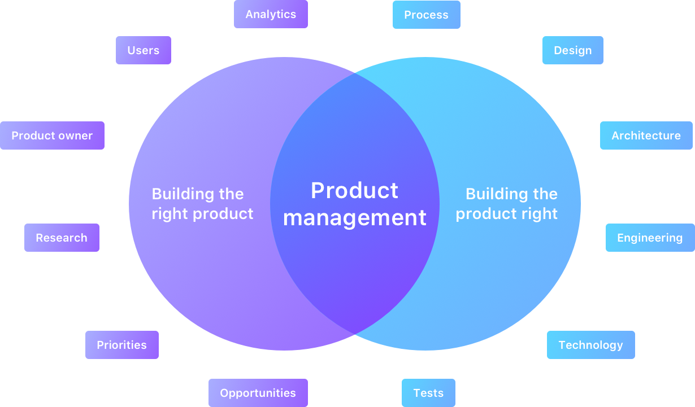
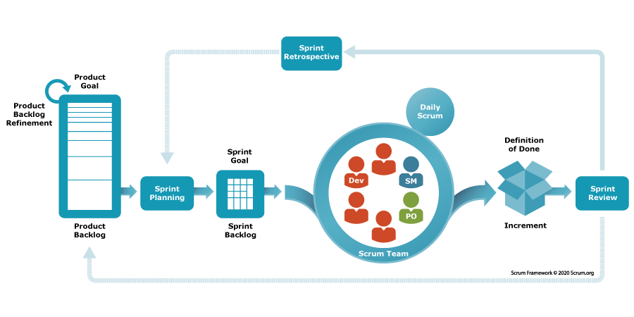
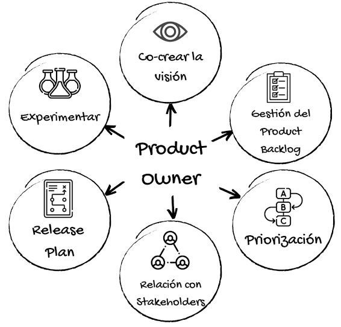

Artículo
¿Qué es Product Management?
La intersección entre construir el producto correcto y construir bien el producto.
Leer más →Product Manager
Escribo sobre cómo tomar decisiones de producto con datos y experimentos, no con plantillas.
01 · Sobre mí
Soy Luis Adrián Lara García. Ayudo a Product Managers y equipos de producto a dejar de decidir por intuición: formular hipótesis claras, diseñar experimentos y medir lo que de verdad importa.
Cada feature empieza como una hipótesis que se puede probar, no como una idea en el roadmap.
Métricas que guían decisiones, no reportes que nadie lee.
Conectar los experimentos con los objetivos del negocio.
02 · Blogs y contenido

La intersección entre construir el producto correcto y construir bien el producto.
Leer más →
Del Product Backlog al incremento: cómo encaja cada evento del sprint.
Leer más →
Visión, backlog, priorización, stakeholders, release plan y experimentación.
Leer más →¿Te sirvió mi contenido?
personas a las que les sirvió
03 · Consultorías y asesorías
Sesiones individuales para PMs que quieren trabajar con hipótesis y métricas.
Me interesaUn taller práctico para que tu equipo diseñe y corra sus primeros experimentos.
Me interesaReviso tu roadmap y tus métricas, y te propongo qué validar primero.
Me interesa¿Quieres llevar tu producto con más rigor? Agenda una llamada de 30 minutos.